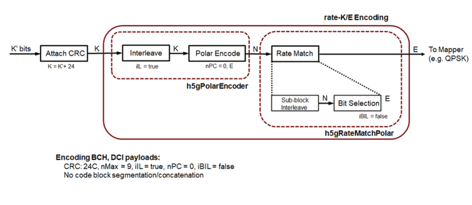
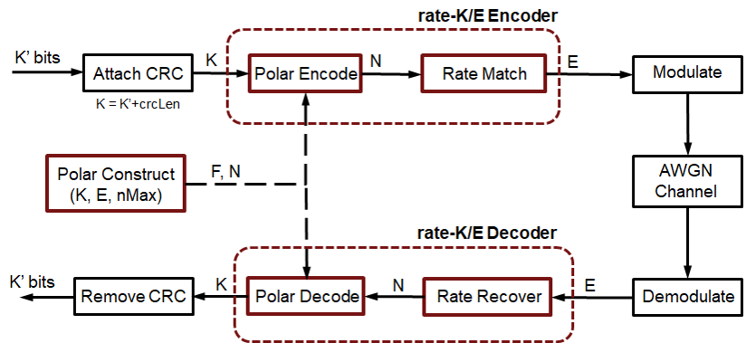
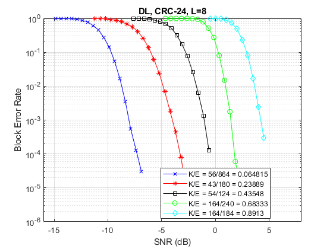

5G Polar Coding
This example highlights the new polar channel coding technique chosen for 5G communications system. Of the two main types of code constructions specified by 3GPP, this example models the CRC-Aided Polar (CA-Polar) coding scheme. This example describes the main components of the polar coding scheme with individual components for code construction, encoding and decoding along-with rate-matching. It models a polar-coded QPSK-modulated link over AWGN and presents Block-Error-Rate results for different message lengths and code rates for the coding scheme.
Contents
Introduction
The selection of polar codes as the channel coding technique for control channels for 5G communications system has proven the merits of Arikan's [ 1 ] discovery and will establish their application in commercial systems [ 7 ]. Based on the concept of channel polarization, this new coding family is capacity achieving as opposed to just capacity approaching. With better or comparable performance than LDPC and turbo codes, it supersedes the tail-biting convolutional codes used in LTE systems for control channels. It is applied for downlink and uplink control information (DCI/UCI) for the enhanced mobile broadband (eMBB) use case, as well as the broadcast channel (BCH). Alternatively, the channel coding scheme for data channels for eMBB is specified to be flexible LDPC for all block sizes.
This example highlights the components to enable a polar coding downlink simulation using QPSK modulation over an AWGN channel. In the following sections, the individual polar coding components are further detailed.
s = rng(311); % Seed the RNG for repeatability
Specify the code parameters used for a simulation.
% Code parameters K = 54; % Message length in bits, including CRC, K > 24 for DL E = 124; % Rate matched output length, E <= 8192 EbNo = 0.8; % EbNo in dB L = 8; % List length, a power of two, [2 4 8] numFrames = 10; % Number of frames to simulate
Code Construction
In general, polar code construction methods studied so far are SNR-dependent [ 6 ]. However, this example offers the 3GPP selected SNR-independent method where the reliability of each subchannel can be computed offline and the ordered sequence stored for a maximum code length [ 7 ]. The nested property of polar codes allows this sequence to be used for any code rate and all code lengths smaller than the maximum code length.
The function h5gPolarConstruct computes this sequence for a given rate-matched output length, E and based on the information length, K, creates the frozen bit vector, F, that has frozen bits for the least reliable subchannels. An entry of one in the vector indicates the specific bit to be frozen. The frozen bits are set to be zeros and are assumed known at both the encoder and decoder ends.
% Downlink channel parameters (K > 24, including CRC bits) crcLen = 24; % Number of CRC bits for DL, Section 5.1, [7] nPC = 0; % Number of parity check bits, Section 5.3.1.2, [7] nMax = 9; % Maximum value of n, for 2^n, Section 7.3.3, [7] iIL = true; % Interleave input, Section 5.3.1.1, [7] iBIL = false; % Interleave coded bits, Section 5.4.1.3, [7] % Code construction F = h5gPolarConstruct(K,E,nMax); % 0 for information, 1 for frozen N = length(F); % Mother code block length
The construction process accounts for the cases of puncturing, shortening or repetition, based on the selected values of K and E and the resultant mother code block length, N.
The following schematic details the transmit-end processing for the downlink, with relevant components and their parameters highlighted.

R = K/E; % Effective code rate bps = 2; % bits per symbol, 1 for BPSK, 2 for QPSK EsNo = EbNo + 10*log10(bps); snrdB = EsNo + 10*log10(R); % in dB noiseVar = 1./(10.^(snrdB/10));
Polar Encoding
Using the frozen bit vector, F, generated from the code construction process, create the h5gPolarEncoder System object™ for polar encoding. This object implements the non-systematic encoding of the input K bits.
As specified by 3GPP, for the downlink, the input bits are interleaved prior to encoding. This is to distribute the CRC bits, which are appended at the end of the information bits. This interleaving is not specified for the uplink. The h5gPolarEncoder object implements the interleaving of the input bits as well.
% Polar Encoder polarEnc = h5gPolarEncoder(N,K,F,'InterleaveInput',iIL); % Modulator, Channel, Demodulator qpskMod = comm.QPSKModulator('BitInput', true); chan = comm.AWGNChannel('NoiseMethod','Variance','Variance',noiseVar); qpskDemod = comm.QPSKDemodulator('BitOutput',true,'DecisionMethod', ... 'Approximate log-likelihood ratio','Variance',noiseVar);
Rate Matching and Rate Recovery
The polar encoded set of bits (N) are rate-matched to output the specified number of bits (E) for resource element mapping [ 8 ]. The coded bits are sub-block interleaved and passed to a circular buffer of length N. Depending on the desired code rate and selected values of K, E, and N, either of repetition (E >= N), and puncturing or shortening (E < N) is realized by reading the output bits from the buffer.
- For puncturing, E bits are taken from the end
- For shortening, E bits are taken from the start
- For repetition, E bits are repeated modulo N.
For the downlink, the selected bits are passed on to the modulation mapper, while for the uplink, they are further interleaved prior to mapping.
At the receiver end, rate recovery is accomplished for each of the cases
- For puncturing, corresponding LLRS for the bits removed are set to zero
- For shortening, corresponding LLRS for the bits removed are set to a large value
- For repetition, the set of LLRs corresponding to first N bits are selected.
Polar Decoding
Three main polar decoding algorithms include Successive Cancellation (SC), Successive Cancellation List (SCL) decoding and CRC-Aided Successive Cancellation List Decoding (CA-SCL). This example supports the latter two decoding techniques due to their improved performance benefits in comparison to the first. It is well known that CA-SCL decoding can outperform turbo or LDPC codes and this was one of the major factors in the adoption of polar codes by 3GPP.
Tal & Vardy [ 2 ] describe the SCL decoding algorithm in terms of likelihoods (probabilities). However, due to underflow, the inherent computations are numerically unstable. To overcome this issue, Stimming et.al. [ 5 ] offer the SCL decoding solely in the log-likelihood ratio (LLR) domain. This is implemented by the System object h5gPolarDecoder. The list decoding is characterized by the L parameter, which represents the number of most likely decoding paths retained. At the end of the decoding, the most likely code-path among the L paths is the decoder output. As L is increased, the decoder performance also improves, however, with a diminishing-returns effect.
A non-zero value for the CRCLength property enables CRC-aided SCL decoding [ 3 ]. For an input message which is concatenated with a CRC, CA-SCL decoding prunes out any of the paths for which the CRC is invalid, if at least one path has the correct CRC. This additional insight in the final path selection improves the performance further, when compared to SCL decoding. For the downlink, a CRC of 24 bits is used, while for the uplink CRCs of 6 and 11 bits are specified, which vary on the value of K.
The decoder also accounts for the input bit interleaving specified at the transmitter for the downlink, prior to outputting the decoded bits.
% Polar Decoder polarDec = h5gPolarDecoder(N,K,F,L,crcLen,'DeinterleaveOutput',iIL); % Bit-Error rate meter ber = comm.ErrorRate;
The following schematic highlights the coding components with their relevant parameters, in a simulation link.

Frame Processing Loop
This section shows how the prior initialized components for polar coding are used in a Block Error Rate (BLER) simulation. For each frame processed, the following steps are performed:
- K-crcLen random bits are generated,
- A CRC is computed and appended to these bits
- The CRC appended bits are polar encoded to the mother code block length
- Rate-matching is performed to transmit E bits
- The E bits are QPSK modulated
- White Gaussian Noise of specified power is added
- The noisy signal is soft QPSK demodulated to output LLR values
- Rate recovery is performed accounting for either of puncturing, shortening or repetition
- The recovered LLR values are polar decoded using the CA-SCL algorithm, including deinterleaving.
- Off the decoded K bits, the first K-crcLen bits are compared with those transmitted to update the BLER and bit-error-rate (BER) metrics.
At the end of the simulation, the two performance indicators, BLER and BER, are reported.
numferr = 0; for i = 1:numFrames % Generate a random message msg = randi([0 1],K-crcLen,1); % CRC attachment msgcrc = h5gCRCEncode(msg,'24C'); % Polar encode encOut = polarEnc(msgcrc); % Rate match modIn = h5gRateMatchPolar(encOut,K,E,iBIL); % Modulate modOut = qpskMod(modIn); % Add white Gaussian noise rSig = chan(modOut); % Soft demodulate rxLLR = qpskDemod(rSig); % Rate recover decIn = h5gRateRecoverPolar(rxLLR,K,N,iBIL); % Polar decode decBits = polarDec(decIn); % Compare msg and decoded bits errStats = ber(decBits(1:K-crcLen), msg); numferr = numferr + any(decBits(1:K-crcLen)~=msg); end disp(['Block Error Rate: ' num2str(numferr/numFrames) ... ', Bit Error Rate: ' num2str(errStats(1)) ... ', at SNR = ' num2str(snrdB) ' dB']) rng(s); % Restore RNG
Block Error Rate: 0.1, Bit Error Rate: 0.026667, at SNR = 0.20002 dB
Results
To get meaningful results, simulations have to be run for a longer duration. Using the attached script hPolarBLERSimDriver, which encapsulates the above processing into a function that supports C-code generation, the following results for different code rates and message lengths are presented.

The above results were generated by simulating, for each SNR point, up to 1000 frame errors or a maximum of 100e3 frames, whichever occurred first.
These BLER performance results indicate the suitability of polar codes in a communication link and their implicit support for rate-compatibility at the bit-level granularity.
The use of C-code generation tools for the components reduces the execution time, a key concern for simulations. The C-code generation is enabled by MATLAB Coder™.
Summary and Further Exploration
This example highlights one of the polar coding schemes (CRC-Aided Polar) specified by 3GPP for New Radio control channels (DCI, UCI) and broadcast channel (BCH). It offers components for all stages of the processing (code construction, encoding, rate-matching and decoding) and uses them in a link with QPSK over an AWGN channel. Highlighted performance results for different code rates and message lengths show agreement to published trends, within parametric and simulation assumption variations.
Explore simple parameter variations (K, E, L) and their effect on BLER performance. The polar coding components are implemented as open MATLAB® code to enable their application for both downlink/uplink control and broadcast channels. The CA-Polar scheme is applicable for both
- Downlink, for all message lengths, and
- Uplink, for K > 30, with crcLen = 11, nPC = 0, nMax = 10, iIL = false, and iBIL = true.
Future work would include application of the technique to PDCCH, PUCCH and PBCH channels as well as supporting parity-check polar coding (PC-Polar) for the uplink for smaller message lengths (18<=K<=25).
Appendix
The example uses the following system objects and function utilities:
Selected References
- Arikan, E., "Channel Polarization: A Method for constructing Capacity-Achieving Codes for Symmetric Binary-Input Memoryless Channels," IEEE Transactions on Information Theory, vol. 55, No. 7, pp. 3051-3073, July 2009.
- Tal, I, and Vardy, A., "List decoding of Polar Codes", IEEE Transactions on Information Theory, vol. 61, No. 5, pp. 2213-2226, May 2015.
- Niu, K., and Chen, K., "CRC-Aided Decoding of Polar Codes," IEEE Communications Letters, vol. 16, No. 10, pp. 1668-1671, Oct. 2012.
- Niu, K., Chen, K., and Lin, J.R., "Beyond turbo codes: rate compatible punctured polar codes", IEEE International Conference on Communications, pp. 3423-3427, 2013.
- Stimming, A. B., Parizi, M. B., and Burg, A., "LLR-Based Successive Cancellation List Decoding of Polar Codes", IEEE Transaction on Signal Processing, vol. 63, No. 19, pp.5165-5179, 2015.
- Vangala, H., Viterbo, E., and Hong, Y., "A Comparative study of Polar Code Constructions for the AWGN Channel", online.
- 3GPP TS 38.212, "3rd Generation Partnership Project; Technical Specification Group Radio Access Network; NR; Multiplexing and channel coding (Release 15), v15.0.0, 2017-12.
- R1-1711729. "WF on circular buffer of Polar Code", 3GPP TSG RAN WG1 meeting NR Ad-Hoc#2, Ericsson, Qualcomm, MediaTek, LGE. June 2017.